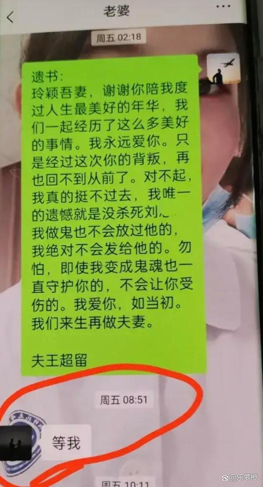

一则「疑护士出轨医师致丈夫自杀」 话题近日登上微博热搜并让网友炸锅。自称死者的父母发文称，她儿子王男今年1月才和在医院担任护士的毛女结婚，没想到毛女5月就出轨同院的刘姓医师，儿子找刘男理论时还遭嘲笑，悲愤之余在8月2日自尽，年仅26岁。家属不满医院漠视，希望诉诸社会，还儿子一个公道。目前，毛女和刘男已被停职，纪检监察部门介入调查。
据百姓关注、澎湃新闻报导，死者父母分别发文指控，儿子7月30日给妻子毛女买了新手机，在用毛女旧手机向新手机传数据时，发现妻子与同科室医师刘男有不正常来往，不仅还在热恋期，且疑在医院发生关系。王男气得用毛女微信质问刘男，对话中遭到了刘男的嘲讽。
8月2日，其子在舟山一家民宿的房间衣柜内自缢身亡。但家属到现场才知，儿子是离开医院后与毛女一同入住。毛女一度离开房间在大厅约1小时，儿子在这段期间自杀。他们认为儿子虽是自缢，但毛女和刘男应承担一定责任。希望院方公正处理，并协调涉事医师出面道歉。
文中称，其子今年1月才办婚礼，女方5月就出轨。当时结婚时女方家要求入赘，家里老人死活不同意，儿子曾跳楼威胁说，他要是结婚了这辈子就跟她一个人，婚姻中绝对没有背叛，没有离婚两个字。
出事后警察在儿子手机里发现保存给父母的遗言，大致是：老爸老妈对不起，我实在挺不住啊，我那么爱她喜欢她，她这样对我，欺骗我，背叛我们的的婚姻，让我崩溃绝望，下辈子再做你的孩子。给毛女的遗言；老婆我爱你，实在接受不了你的背叛，先走了，灵魂再守护你等语。
他们认为是医院的不作为和刘男的嘲讽导致儿子自杀，儿子遗体还放在萧山殡仪馆，在老家的儿子的爷爷和奶奶获悉此事后又倒下了，因此诉诸社会寻求支持。
此事让相关评论区炸锅，网友们大都对王男最后选择自尽觉得「太不值得了」；也有网友质疑王男自杀前是和毛女一起入住，是否有「加工自杀」应调查清楚。
官方昨发布通报导称，7月31日上午8时左右，护士毛女丈夫王男到毛女所在科室反映刘男、毛女有关问题。期间，王男有报警。该院第一时间成立以院领导为组长的调解小组并开展工作。经调解，毛女、王男情绪得到平稳，并于当日上午9时30分左右一起离开医院。
鉴于王男某反映的刘男与毛女涉嫌生活作风问题，经研究，该院于当日上午11时左右对医师刘男、护士毛女进行了停职处理。同时，医院纪检监察部门将依纪依规处理。该院对后续出现的变故感到痛心，将进一步加强全院医护人员职业道德建设和社会公德教育。